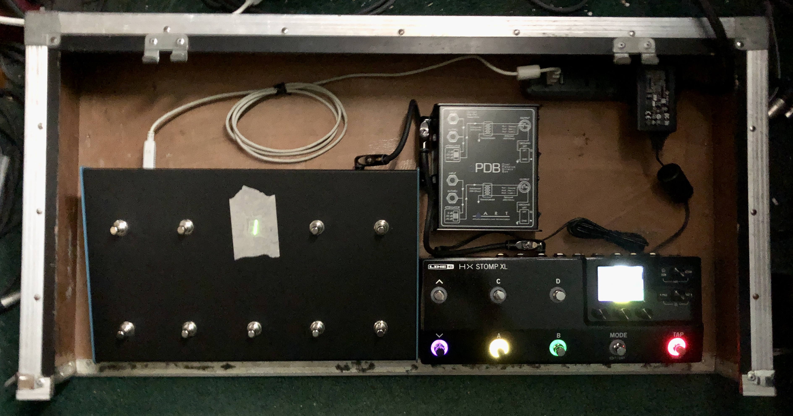
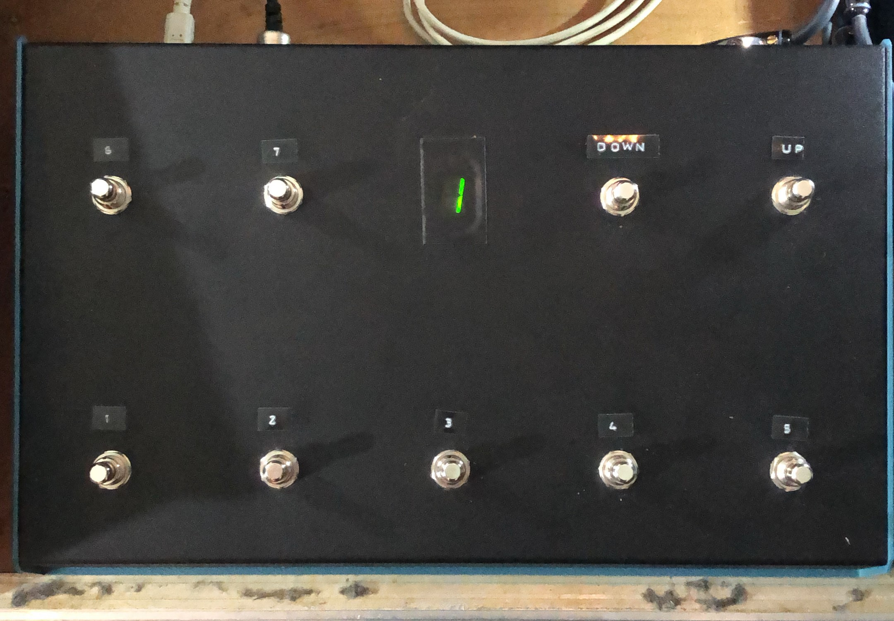

playContr0l
<< return home
About
A Teensy-based sample player and MIDI controller footswitch for live use with Terrorhorse.
Parts:
- >> Hammond 1456PH1BKBU
- >> Parallax 350-00027 - 7-segment display
- >> .47ohms resistors
- >> 220ohms resistors
- >> Switchcraft 57GB5FX - 5-pin DIN
- >> Neutrik 1/4" Jacks
- >> PCB Breadboard
- >> SanDisk 16GB Ultra microSDHC
- >> Multicolored Dupont Wires
- >> Etopars Momentary Footswitch
- >> CERRXIAN Micro USB 5pin Male to USB Type B Female Extension Panel Mount
- >> Teensy 4.0
- >> Audio Adaptor Board for Teensy 4.x
- >> Header Pins
- >> Double Insulator Header Pins
- >> Sockets
>> Code
Build


The first step, of course, was drilling out the case for all the hardware. A block of acrylic was used to hold the 7-segment display and breadboard in place. All the hardware was mounted before wiring began.

The double insulator header pins were soldered to both the Teensy 4.0 and the Audio Adaptor Board. Sockets and header pins were soldered to the breadboard to break out the pins and create a common ground.


Wires were soldered to the footswitches to create a 3x3 button matrix. Output wires were soldered to 1/4" audio jacks. Wires were soldered to the 5-pin DIN, with .47ohm resistors soldered inline.

Wires were soldered to the 7-segment display with 220ohm resistors soldered inline on the hot pins.
At this point, physical assembly was complete, and programming began. My first tests were to code the 7-segment display with each number, creating a simple counting loop to get comfortable with the platform.
My next step in programming was getting the button matrix working, seen here being tested by changing the 7-segment display to show the number of the footswitch.
At this point, the majority of the sampler functionality was programmed and operating correctly. However, I was having an issue with noise, and it only worked when connected to my laptop and mixer, not under separate power.
I moved on to implementing MIDI and quickly had it controlling my effects on/off on my Line6 HD500.
I determined the noise was likely a ground issue, so I opened the pedal and tested my continuity with a multimeter. I found that there was a bad solder point on the ground connection between the Teensy and the Audio Board, which is why it only worked when connected to both the laptop and the mixer (which is also connected to the laptop), as it was grounding the audio shield from the audio outputs, and the Teensy through the USB. Touching up the solder point fixed the problem completely, and the pedal was ready to be installed in my pedalboard, complete with my new Line6 HX Stomp XL.
After using it at band practices and writing sessions, I found a place in a song where I wanted to turn on an octave effect and trigger a sample at the same time, so I assigned both functions to a button on the appropriate bank for the setlist.
Finally gig ready and set up with all the samples and patches needed for our first gig, I finished the cosmetic touches with simple labels, and a piece of translucent adhesive plastic for over the display.
Future Ideas
Possible panel mount SD card slot, or coding based alternative to prevent needing to open the case to update samples.
Possible external trigger input.
Possible DMX lighting controller output implementation.